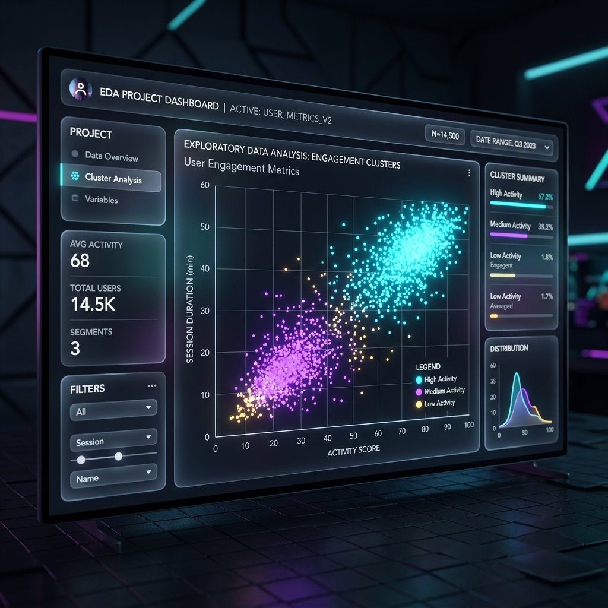
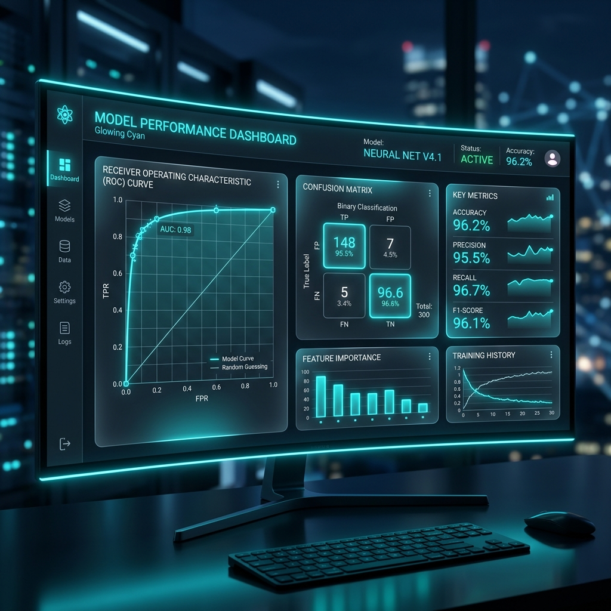

Data Science Gallery
Exploring data through a creative lens. A showcase of my EDA and ML works.

E-Commerce Sales Insights (EDA)
A deep dive into customer purchasing behavior to uncover revenue-driving trends and seasonal patterns.
Dataset Overview
Analyzed 50,000+ transaction records containing customer demographics, product categories, and order timestamps over a 2-year period.
Key Insights Extracted
- Seasonality: Sales peak by 45% during the holiday season (Nov-Dec), primarily driven by electronics and apparel.
- Customer Segmentation: 20% of top customers contribute to 65% of total revenue.
- Cart Abandonment: Higher shipping costs directly correlate with a 30% drop-off rate in the final checkout step.
Conclusions Drawn
The business should implement targeted marketing for the top 20% tier and consider threshold-based free shipping to reduce cart abandonment.

Customer Churn Prediction (ML)
Predictive modeling to identify at-risk customers in a telecom dataset before they cancel their subscriptions.
Data Insights & Preprocessing
The dataset contained significant class imbalance (only 18% churned). Applied SMOTE to oversample the minority class and prevent model bias towards the majority class. Monthly charges and tenure were heavily correlated with churn.
Model Selection & Rationale
Started with Logistic Regression as a baseline. Evaluated Random Forest and XGBoost. Chose XGBoost due to its superior handling of non-linear relationships and built-in regularization, which prevented overfitting on this structured dataset.
Performance Metrics
- Accuracy: 86.5%
- Precision: 79.2% (Minimizing false positives for costly retention offers)
- Recall: 82.1% (Crucial for identifying true churners)
- F1-Score: 80.6%
- AUC-ROC: 0.91